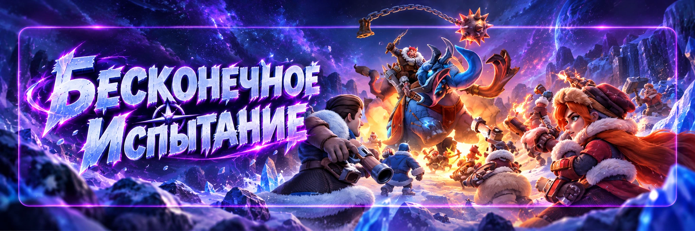

Бесконечное испытание
Автор: SOVA58
Ежедневное PvE-событие против Вульфгара Ветрогона. Главная цель: нанести как можно больше урона за одну атаку.
⚔️ Вульфгара атакуем только одиночным маршем.
♾️ Количество атак в актуальной RU-версии не ограничено.
🏆 В рейтинг идёт лучший результат одного боя, а не сумма всех атак.
🪖 Войска игра подбирает автоматически.
🐾 Учитываем только постоянные характеристики питомцев.
🪖 Войска
Состав войск игра формирует автоматически из ваших доступных сильнейших солдат.
Вручную выставлять соотношение пехоты, копейщиков и стрелков здесь не нужно.
🦸 Герои
Берём трёх героев, которые дают максимальный урон именно по Вульфгару.
Не ориентируемся только на поколение или общую силу. Лучше сделать несколько атак, поменять одного героя и сравнить фактический урон.
🐾 Питомцы
В гайде учитываем только постоянные характеристики питомцев: смертоносность, здоровье войск и другие постоянно прокачанные параметры.
Активные навыки питомцев отдельно не учитываем, чтобы не смешивать разные механики.
📈 Что повышает урон
- уровни и звёзды героев;
- снаряжение героев;
- снаряжение губернатора;
- вместимость отряда;
- атака и смертоносность;
- постоянные характеристики питомцев;
- постоянные бонусы развития аккаунта.
После серьёзной прокачки есть смысл снова проверить личный рекорд.
🎯 Как искать лучший состав
Раз атаковать можно сколько угодно, используем событие как полигон.
Выбрали тройку → ударили → записали урон → поменяли одного героя → ударили снова → сравнили.
Если менять сразу всю тройку, сложнее понять, что именно дало прибавку.
📊 На что смотреть
Главная цифра здесь: максимальный урон за одну атаку.
Неважно, сколько суммарно урона вы нанесли за день. Задача не в количестве боёв, а в поиске лучшего состава.
🎁 Награды
Награды связаны с участием, достижениями по урону и ежедневным рейтингом.
Для большинства игроков выгоднее сначала закрывать доступные пороги достижений, а уже потом смотреть на место в рейтинге.
💬 Опыт игроков
✅ Тестируйте составы, а не смотрите только на силу. Почти одинаковая общая сила может дать разный урон.
✅ Меняйте одного героя за раз. Так сразу видно, помогла замена или нет.
✅ После прокачки проверяйте Вульфгара снова. Новая звезда, снаряжение или вместимость могут поднять рекорд.
✅ Не копируйте чужую тройку вслепую. У другого игрока отличаются звёзды, навыки и снаряжение.
✅ Смотрите на итоговый урон боя. Общая сила состава сама по себе ничего не гарантирует.
✅ Используйте неограниченные попытки для тестов. Можно спокойно перебирать составы, пока не найдёте лучший.
✅ Не гонитесь за верхушкой рейтинга любой ценой. Личные пороги достижений часто дают более предсказуемую пользу.
🚫 Частые ошибки
- считать общий урон всех атак;
- выбирать героев только по общей силе;
- копировать чужой состав без теста;
- менять всю тройку сразу;
- считать, что атак всё ещё только 30;
- путать постоянные характеристики питомцев с активными навыками.
✅ Быстрая схема
🦸 выбрали тройку → ⚔️ ударили → 📊 записали урон → 🔄 поменяли одного героя → ⚔️ ударили снова → 📈 сравнили → 💥 нашли лучший состав
Главное
«Бесконечное испытание» удобно использовать как тестовый полигон.
Атакуем столько, сколько нужно, сравниваем героев и охотимся за максимальным уроном одного удара.